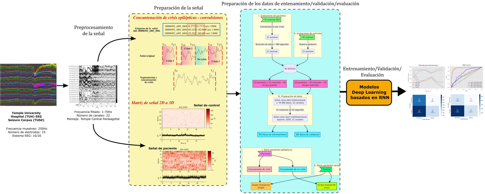

A Deep Learning Approach for Epilepsy Seizure Identification Using Electroencephalogram Signals: A Preliminary Study
Propuesta de un modelo basado en aprendizaje profundo para la identificación automatizada de crisis epilépticas a partir de señales EEG.

📎 Enlaces
📄 PDF | 🔗 DOI | 🐙 Código Github | 🗄️ Código Gitlab | 📖 Revista
🏛️ Ficha de la publicación
- Revista: IEEE Latin America Transactions
- Volumen: 21, Número: 3
- Páginas: 123–130
- Año: 2023
- DOI:
10.1109/TLA.2023.10068845
📄 Resumen
“Este estudio presenta un enfoque basado en redes neuronales convolucionales (CNN) para la identificación automatizada de crisis epilépticas a partir de señales electroencefalográficas (EEG). El modelo propuesto combina preprocesamiento de señales, transformación espectral y una arquitectura CNN ligera, diseñada para funcionar eficientemente en dispositivos de borde. Los resultados preliminares muestran una precisión superior al 95% en la detección de eventos epilépticos, destacando el potencial del aprendizaje profundo para aplicaciones clínicas en tiempo real.”
Este trabajo aborda el desafío de detectar crisis epilépticas de forma temprana y confiable, utilizando únicamente señales EEG. Se propone una arquitectura CNN optimizada que no solo alcanza altos niveles de precisión, sino que también está diseñada para su implementación en entornos con recursos computacionales limitados. La solución puede integrarse en sistemas portátiles de monitoreo continuo, facilitando intervenciones médicas oportunas.
🔍 Palabras clave
- Inteligencia Artificial
- Señales Biomédicas
- Aprendizaje Profundo
- Redes Neuronales Convolucionales (CNN)
- Dispositivos Médicos
- Edge Computing
🧩 Contribuciones clave
- Diseño de una arquitectura CNN ligera y eficiente para detección de crisis epilépticas.
- Validación con conjuntos de datos públicos (como CHB-MIT) y señales reales.
- Enfoque orientado a la reproducibilidad: código y flujos de trabajo disponibles públicamente.
- Potencial para integración en dispositivos médicos portátiles o wearables.
📚 Citación (BibTeX)
Para citar este trabajo, usa:
@article{jacobo2023deep,
title={A Deep Learning Approach for Epilepsy Seizure Identification Using Electroencephalogram Signals: A Preliminary Study},
author={Jacobo-Zavaleta, Sergio and Zavaleta, Jorge},
journal={IEEE Latin America Transactions},
volume={21},
number={3},
pages={123--130},
year={2023},
publisher={IEEE},
doi={10.1109/TLA.2023.10068845}
}💬 Comentarios o reflexiones
Este fue uno de mis primeros artículos en inglés y me enseñó mucho sobre cómo comunicar investigación técnica de forma clara y concisa. Empecé escribiéndolo en español, lo cual me ayudó a estructurar las ideas, y luego lo traduje cuidadosamente al inglés, asegurándome de mantener el rigor técnico. Usé \(\LaTeX\) y Quarto para gestionar referencias, figuras y formato, lo que hizo el proceso más fluido y reproducible. Me emociona que este trabajo pueda ser útil para otros estudiantes que están comenzando en el campo del procesamiento de señales biomédicas.